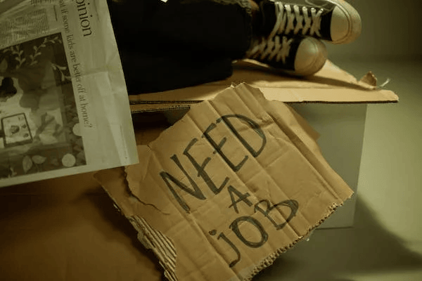
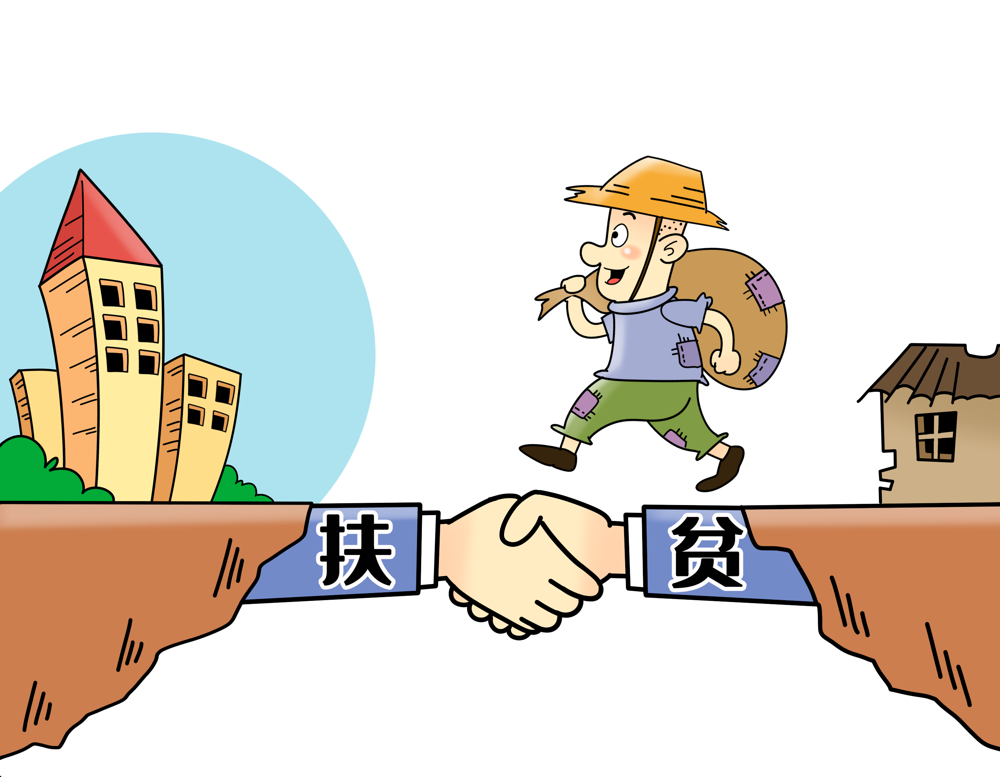
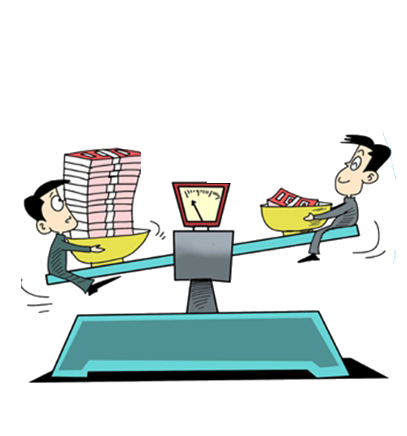

Trabalho e diminuição da pobreza
Promover políticas orientadas para o desenvolvimento que apoiem as atividades produtivas, geração de emprego decente, empreendedorismo, criatividade e inovação, e incentivar a formalização e o crescimento das micro, pequenas e médias empresas, inclusive por meio do acesso a serviços financeiros.
Saiba mais

Crescimento econômico
A revitalização econômica contribui para criar melhores condições para a estabilidade e a sustentabilidade do país. É possível promover políticas que incentivem o empreendedorismo e a criação de empregos de forma sustentável e inclusiva.
No longo prazo, a desigualdade de renda e de oportunidades prejudica o crescimento econômico e o alcance do desenvolvimento sustentável. Os mais vulneráveis, muitas vezes, têm menores expectativas de vida e apresentam dificuldades de se libertarem de um círculo vicioso de insucesso escolar, baixas qualificações e poucas perspectivas de empregos de qualidade.
Saiba mais
O desemprego e sua influência na desigualdade social
Promover políticas orientadas para o desenvolvimento que apoiem as atividades produtivas, geração de emprego decente, empreendedorismo, criatividade e inovação, e incentivar a formalização e o crescimento das micro, pequenas e médias empresas, inclusive por meio do acesso a serviços financeiros.
Saiba mais
 